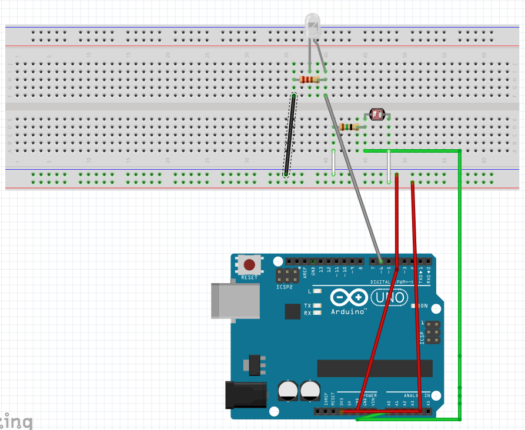
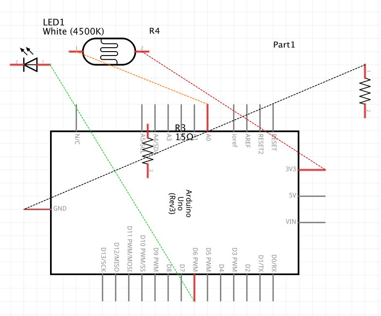
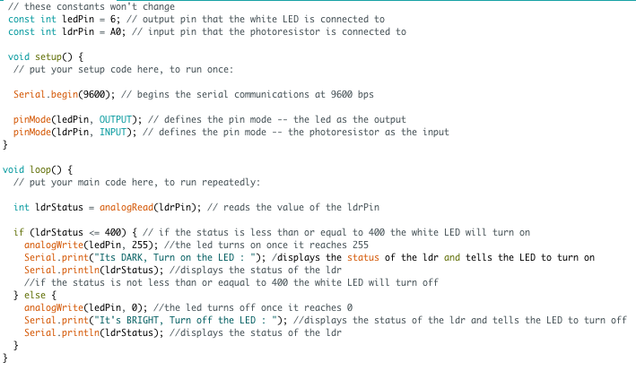

Assignment 3: Input Output!
When the room is dark, the bright white LED will turn on! This serves as a self-created night light!

When the room is dark, the bright white LED will turn on! This serves as a self-created night light!
 
I chose to use 10k ohm resistors with the photoresistor and 220k ohm resistors with the LED. I chose to use these resistros because they were the safest with the LED lights. While initially using a 330 ohm resistor my LED light burned out, so I took the advice given in class and chose to use a lower ohm resistor (10k).
V = 5 - 1.8(V drop) = 3.2v 3.2 = 0.02 x R(ohms) R = 3.2/0.02 = 160(ohms)
